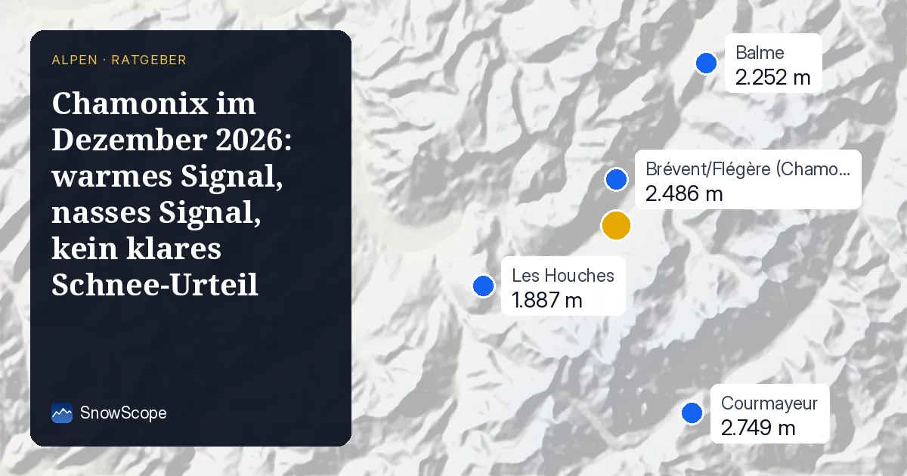
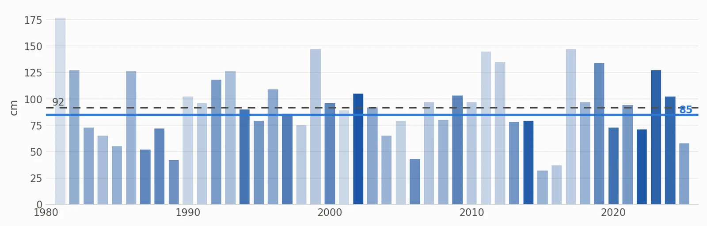

Chamonix im Dezember 2026: warmes Signal, nasses Signal, kein klares Schnee-Urteil
Chamonix's Hochgipfel wachten am 10. November mit 27 cm auf, doch die Mittelstationen-Station hält nur 1 cm und die Talstation ist schneefrei. Die Saisonprognose für Dezember neigt zu Wärme und leicht erhöhtem Niederschlag, aber diese beiden Kräfte heben sich fast auf – der Monat sollte seiner üblichen Schneesumme nahe bleiben.
Die Live-Schneeprognose für Chamonix in der SnowScope-AppSchneehöhen, Pulverschnee-Alarme und 3D-Karte, gratis.

Die Höhe entscheidet jetzt das Bild
Frühjahrsschnee bleibt nur dort, wo es kalt ist. Die Grands Montets Spitze auf 2768 m hat 27 cm, nachdem in der Vorwoche 15 cm fielen. Sinke 800 Meter zur Mittelstation (2001 m) und du findest nur 1 cm, obwohl in denselben sieben Tagen 10 cm kamen. Die Talstation auf 1234 m zeigt nichts.
Dies ist die Geschichte einer hohen Schneefallgrenze. Auf der SnowScope-Karte sind 47 Prozent des 60-km-Fensters um Chamonix weiß – das Mont-Blanc-Massiv und die hohen Wallis-Flanken – aber die Täler bleiben schneefrei. Die nächsten sieben Tage könnten weitere 26 cm in die Hochzone und 5 cm zur Mittelstation bringen.
Noch kein klares Muster in den Bergen
Wenn SnowScope jeden Berghang mit seinen eigenen letzten 24 Dezembern vergleicht, zeigen die meisten Bereiche um Mont Blanc kein starkes Signal. Sechsundachtzig Prozent des Geländes haben keinen klaren Trend. Vierzehn Prozent neigen zum Weniger (hauptsächlich untere Voralpen nahe Annecy), und nirgends sticht es als natürlicherweise schneereicher heraus.
In Mittelstationshöhe liegt die Chance auf mehr Neuschnee als in einem typischen Dezember bei 45 Prozent. Ein normaler Dezember bringt dort 68 cm Neuschnee; die Aussicht für dieses Jahr deutet auf 66 cm. Bis 31. Dezember beträgt die typische Mächtigkeit 92 cm und die Prognose-Mächtigkeit 85 cm, sehr wahrscheinlich zwischen 71 und 103 cm.

Wärme und Feuchte im Tauziehen
Die durchschnittliche Erwärmung in der Region liegt 1,6 °C über normal, wobei 84 Prozent der Läufe wärmer sind. Niederschlag ist 11 Prozent feuchter als die üblichen 128 mm, gestützt von 65 Prozent des Ensembles.
Diese Signale ziehen in unterschiedliche Richtungen. Höhe bewahrt Niederschlag als Schnee; tiefere Lagen zahlen den Preis eines wärmeren Monats in Form von Regen und einer steigenden Schneefallgrenze. In Chamonix's letzten 45 Dezembern ist die Schneetiefe hier viel näher mit dem Niederschlag verflochten (Korrelation 0,94) als mit der Temperatur, deshalb landet die Prognose nahe dem Normal – die beiden Effekte heben sich größtenteils auf.


Drei Dezember, die sich so anfühlten
Die drei letzten Dezember, deren Wetter dieser Prognose am ähnlichsten waren, sind 2002, 2022 und 2014. Doch diese drei waren nicht gleich für Schnee. Diese Ehrlichkeit ist wichtig: die Prognose neigt die Chancen nur leicht; sie sperrt nicht den Ausgang des Monats fest.
Die Schlüssellehre ist Variabilität. Warme Jahre bedeuten nicht immer mageren Schnee, wenn Nässe eingerechnet wird. Plane zuerst das Hochgelände – die Grands Montets Spitze und die Gletscheransätze – und behandle tiefere Pisten als Bonus. Sieh dir die 7-Tage-Prognose an, bevor du dich für eine Reise entscheidest.

Worauf du in den kommenden Wochen achten musst
Anfang Dezember hängt in der Waage. Die dünne Auflage an der Mittelstation könnte sich verfestigen, oder Dezembers Wärme könnte die Regenfallgrenze höher drücken. Der Unterschied zwischen einem guten Monat und einem mageren könnte davon abhängen, ob Dezember in seinen ersten zwei Wochen mehr zur Wärme oder zur Nässe neigt.
Nutze die SnowScope-Karte, um die Schneefallgrenze zu verfolgen, während sich die 7-Tage-Prognose entwickelt. Diese Linie wird dir mehr über welche Talabfahrten fahrbar sind als jede einzelne Saisonprognose sagen.
Tipps für Skifahrer
- Starte deine Dezembertage auf den Grands Montets und dem Gletschergelände; die Höhe sperrt die besten Schneechancen ein.
- Beobachte die 7-Tage-Prognose genau auf Regenfallgrenze-Verschiebungen. Ein Warmlufteinbruch Mitte Monat könnte die Regenfallgrenze höher drücken und die Mittelstationen-Auflage schrumpfen lassen.
- Die Aussicht umfasst 71 bis 103 cm bis Monatsende an der Mittelstation; nutze das untere Ende der Spanne, um konservativ am Anfang zu planen, das obere, wie es sich entfaltet.
- Bevor du Ende Dezember buchst, vergleiche die 7-Tage-Prognose zu jener Zeit mit dieser Saisonaussicht. Saisonprognosen sind Leitfäden, keine Garantien.
- Schichte die SnowScope Schneetiefe-Karte jede Woche, um zu sehen, wo sich die Schneefallgrenze niederlässt, während Dezember voranschreitet.
Zu diesen Zahlen
Die Schneehöhen der Skigebiete sind der meiste Schnee in den oberen Hängen am angegebenen Tag; es sind Schätzungen für eine Fläche, keine Messung an einem Punkt. Prognosen können sich ändern. Lies vor dem Freeriden immer den offiziellen Lawinenlagebericht.
Diesen Bericht zitieren
Für Forschung, Lehre oder Presse: Zahlen und Grafiken sind unter CC BY 4.0 mit dieser Quellenangabe frei nutzbar.
SnowScope (2026), Chamonix im Dezember 2026: warmes Signal, nasses Signal, kein klares Schnee-Urteil, https://snowscope.app/blog/de/2026/11/chamonix-december-2026-snow-outlook.html, abgerufen am 2026-11-10
SnowScope (Atlas Labs). (2026, November 10). Chamonix im Dezember 2026: warmes Signal, nasses Signal, kein klares Schnee-Urteil. SnowScope snow reports. https://snowscope.app/blog/de/2026/11/chamonix-december-2026-snow-outlook.html
BibTeX
@misc{snowscope2026chamonixdecember2026snow,
author = {{SnowScope (Atlas Labs)}},
title = {Chamonix im Dezember 2026: warmes Signal, nasses Signal, kein klares Schnee-Urteil},
year = {2026},
month = nov,
howpublished = {\url{https://snowscope.app/blog/de/2026/11/chamonix-december-2026-snow-outlook.html}},
note = {Published 2026-11-10 09:29 UTC; accessed 2026-11-10}
}· CC BY 4.0 · Methoden, Daten und Werkzeuge →
Chamonix folgen
Gratis: eine Nachricht, wenn Neuschnee kommt, und jeden Morgen die Vorhersage.
Weitere Schneeberichte

Wann Courchevel und die 3 Vallées buchen, welches Dorf wählen und wo der Schnee hält, geplant aus 46 vergangenen Wintern.

Bonneval-sur-Arc liegt auf 1.794 m im hohen Arc-Tal, im Winter durch den Iseran abgeschnitten. Die Schneehöhe reicht von 99 cm in der Talstation bis 335 cm am Berg. Daten aus 46 vergangenen Wintern, November 2026.

Die Sellaronda ab Wolkenstein (Sëlva) in Gröden: Grödner Joch, Campolongo, Pordoi und Sellajoch der Reihe nach, mit unserer Schneehistorie von 46 vergangenen Wintern.